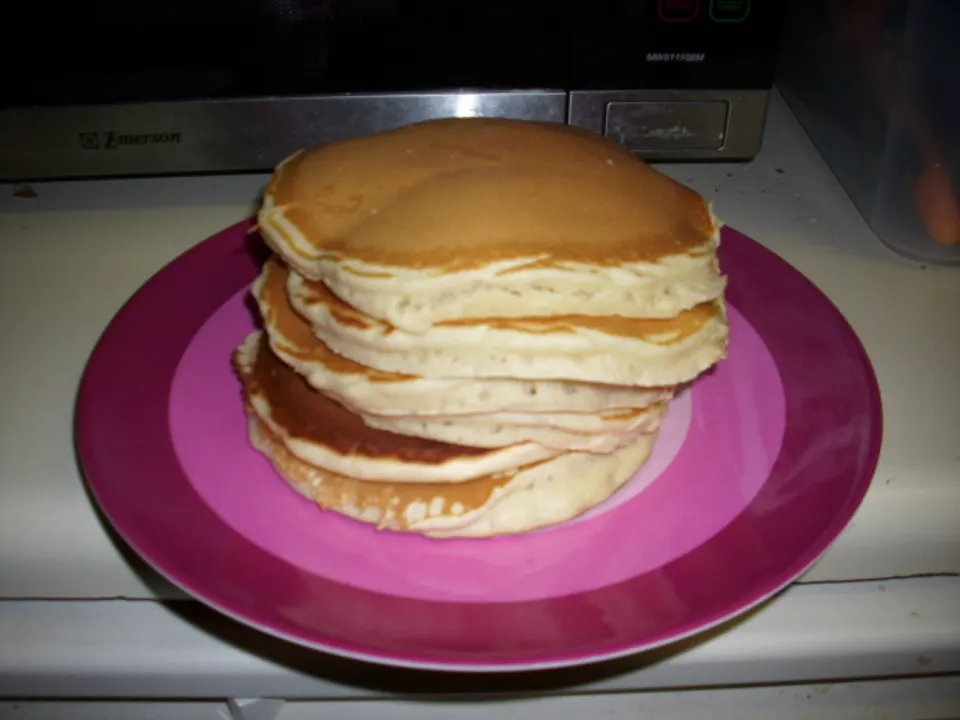

Back

Pancakes
2/3
directions
Beat egg until fluffy.
Add milk and melted margarine.
Add dry ingredients and mix well.
Heat a heavy griddle or fry pan which is
greased with a little butter on a paper
towel.
The pan is hot enough when a drop of
water breaks into several smaller balls
which 'dance' around the pan.
Pour a small amount of batter (approx
1/4 cup) into pan and tip to spread out
or spread with spoon.
When bubbles appear on surface and
begin to break, turn over and cook the
other side.
ingredients
1 egg
3⁄4 cup milk
2 tablespoons butter or 2 tablespoons
margarine, melted
1 cup flour
1 tablespoon sugar (or 1/2 teaspoon
honey or molasses)
1 teaspoon baking powder
1⁄2 teaspoon salt